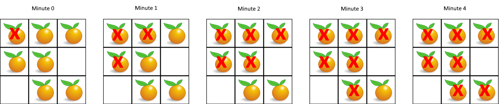

题面
在给定的 m x n 网格 grid 中，每个单元格可以有以下三个值之一：
- 值
0代表空单元格； - 值
1代表新鲜橘子； - 值
2代表腐烂的橘子。
每分钟，腐烂的橘子 周围 4 个方向上相邻 的新鲜橘子都会腐烂。
返回 直到单元格中没有新鲜橘子为止所必须经过的最小分钟数。如果不可能，返回 -1 。
示例 1：

输入： grid = [[2,1,1],[1,1,0],[0,1,1]]
输出： 4示例 2：
输入： grid = [[2,1,1],[0,1,1],[1,0,1]]
输出： -1
解释： 左下角的橘子（第 2 行， 第 0 列）永远不会腐烂，因为腐烂只会发生在 4 个方向上。示例 3：
输入： grid = [[0,2]]
输出： 0
解释： 因为 0 分钟时已经没有新鲜橘子了，所以答案就是 0 。提示：
m == grid.lengthn == grid[i].length1 <= m, n <= 10grid[i][j]仅为0、1或2
思路
BFS 与 DFS 什么时候用哪个
BFS（广度优先） | DFS（深度优先） | |
|---|---|---|
扩散方式 | 一圈一圈往外扩 | 一条路走到底 |
典型场景 | 求最短距离/最少步数、逐层处理、多源同时扩散 | 找连通块、遍历所有路径、递归建树/分治 |
保证最短 | ✅ 先到的距离最短 | ❌ 不保证顺序 |
典型题目 | 腐烂橘子、层序遍历、右视图 | 岛屿数量、前缀和路径(437)、前序+中序建树(105) |
一句话：需要"一层一层扩散"或"求最短距离"用 BFS，需要"一条路走到底"或"把一整块走遍"用 DFS。
多源 BFS
- 本题是多源 BFS：多个腐烂橘子同时开始扩散，不是从一个起点出发
- 和普通 BFS 唯一的区别就是初始化时入队几个起点：
# 普通 BFS（层序遍历）：一个起点
queue = [root]
# 多源 BFS（腐烂橘子）：所有腐烂橘子同时入队
for i in range(m):
for j in range(n):
if grid[i][j] == 2:
queue.append((i, j)) # 多个起点- 后面的逐层扩散框架完全一样。多个起点放进去，第一轮它们同时向外扩一圈，就像往池塘里同时扔好几颗石子，涟漪同时扩散
本题思路
层序遍历（第 41 题） | 本题（腐烂橘子） | |
|---|---|---|
数据结构 | 二叉树 | 二维网格 |
起点 | 1 个（根节点） | 多个（所有腐烂橘子） |
扩散方向 | 左右子节点 | 上下左右四个方向 |
每层含义 | 树的一层 | 一分钟的扩散 |
框架 | queue + tmp 逐层替换 | 完全一样 |
做法
- 初始化：遍历网格，所有腐烂橘子
2入队，同时统计新鲜橘子数量fresh - BFS 逐层扩散：每一轮取出队列里所有腐烂橘子，向四个方向感染相邻的新鲜橘子（
1→2），加入tmp，fresh -= 1 - 计时：只有
tmp不为空（本轮有新感染）才time += 1 - 结束判断：
fresh == 0→ 返回time；fresh > 0→ 有橘子被0隔开永远感染不到，返回-1
感染的传播范围
- 感染只能通过相邻的
1一个传一个，中间隔着 `0`（空格）就传不过去 - 新被感染的橘子下一轮也会继续感染它的邻居，所以能传播很远，但必须有连续的
1相连 - 这就是为什么最后要判断
fresh > 0返回-1：被0隔开的新鲜橘子永远感染不到
time 加 1 的时机
- 只有 `tmp` 不为空时才 +1：如果这轮没感染任何橘子（
tmp为空），说明要么全部感染完了，要么被隔开了。这轮不算一分钟 - 如果不判断直接 +1，最后一轮会多算一分钟
代码实现
class Solution:
def orangesRotting(self, grid: List[List[int]]) -> int:
m = len(grid)
n = len(grid[0])
self.fresh = 0
queue = []
self.time = 0
for i in range(m):
for j in range(n):
if grid[i][j] == 2:
queue.append((i, j))
if grid[i][j] == 1:
self.fresh += 1
while queue:
tmp = []
for (ni, nj) in queue:
for (n_i, n_j) in [(ni - 1, nj), (ni + 1, nj), (ni, nj - 1), (ni, nj + 1)]:
if 0 <= n_i and n_i < m and 0 <= n_j and n_j < n:
if grid[n_i][n_j] == 1:
tmp.append((n_i, n_j))
grid[n_i][n_j] = 2
self.fresh -= 1
if tmp:
self.time += 1
queue = tmp
return self.time if self.fresh == 0 else -1- 易错点：
- 所有腐烂橘子都要入队，不是只找第一个：多个腐烂橘子同时扩散，漏了任何一个都会导致答案偏大
- 只感染 `== 1` 的，不是 `!= 0` 的：
!= 0会把已经腐烂的2也加进去，重复处理 - `if tmp: time += 1`：最后一轮队列里的橘子四周都没有新鲜的了，
tmp为空，不该 +1，否则多算一分钟 - 感染后立即标记 `grid[n_i][n_j] = 2`：不标记的话同一轮中其他橘子可能重复感染同一个格子，导致
fresh多减 - 注意本题网格值是数字 `0/1/2`，不是字符串：和上一题（岛屿数量）不同，这题不需要加引号
- 复杂度：时间 O(m × n)，空间 O(m × n)（队列最多存所有格子）